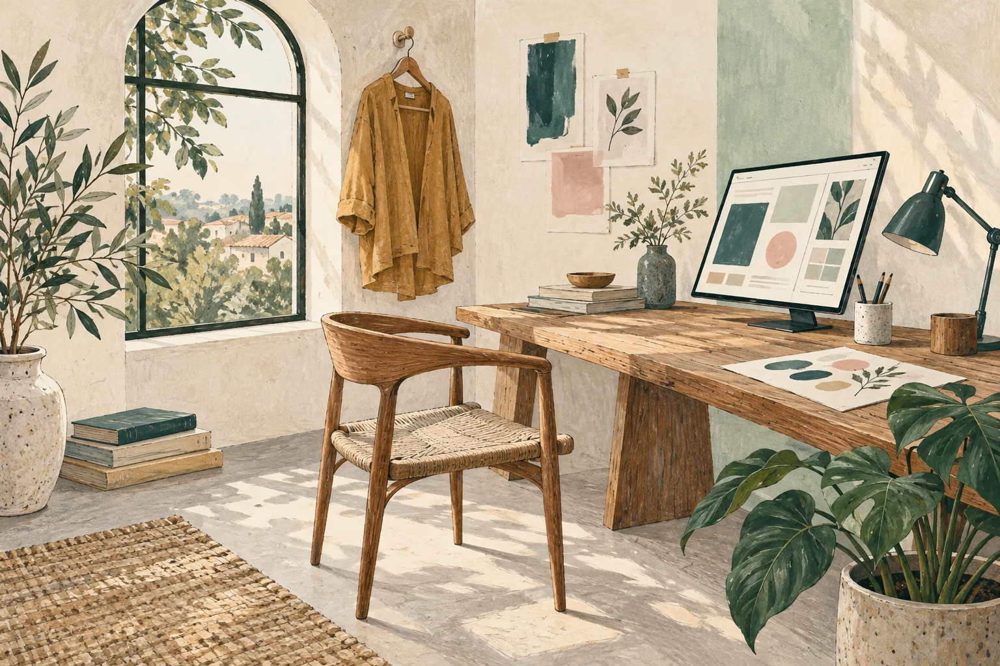

A glimpse of an earlier expansion
All seven selected occupations grew between these two censuses. Web designers rose from 3,486 to 5,015, while graphic designers remained the largest group shown.
A field guide to Australia’s design industries
Pull up a chair. Look around the room. Someone shaped the things you see, including the screen you are reading.
But how do we count the work behind them? Follow the people, the studios and the applications to protect what products look like. Each tells a different part of the story.
Begin the field guide
A garment can lead us to its designer, the business that employs them, or an application to protect its appearance. These are different questions, with different answers.
Keep these lenses separate. Adding their totals would count different things as if they were the same.
A room, a garment and a screen ask different things of a designer. The occupation lens helps us see those differences. First, a historical glimpse; then a separate 2021 snapshot of working patterns.
All seven selected occupations grew between these two censuses. Web designers rose from 3,486 to 5,015, while graphic designers remained the largest group shown.
Graphic and interior design have part-time shares around 37%. UI/UX (user interface and user experience design) has a much lower published share, 11.4%.
Designers work beyond specialist studios. In the published profiles, 22.8% of industrial designers worked in manufacturing, while 22.2% of multimedia designers worked in education and training.
Read each line from top to bottom. Every horizontal axis uses the same 0–100% scale. A line describes one occupation across five selected employer industries; it does not trace people moving between them.
The person is only one lens. Next, we change the question: what can we learn from the businesses themselves?
From the person at work, we turn to the business behind them. In June 2025, Australia had 17,498 businesses in “Other Specialised Design Services”, a category that includes graphic, fashion and interior design services.
It has 7.38 specialised design businesses per 1,000 businesses overall. This rate compares specialised design across states and territories with different numbers of businesses.
Notice the denominator. Darker shading means more specialised design businesses relative to all businesses, not simply a larger state.
New South Wales and Victoria together account for 11,696 businesses, or 66.8% of the national total. Circle area represents the count.
A closer look at three neighbouring circles
The share is 69.3%, compared with 52.4% in architecture and 59.9% in advertising. These are three separate business classes, chosen for comparison.
Read this mosaic in two directions: column width = businesses in the class; coloured height = its employment-size mix.
The smallest slices are still there. Businesses with 200+ employees: architecture 7, specialised design 3, advertising 24. These slices are too thin to compare reliably at this scale.
Short labels: Arch. = Architecture; Advt. = Advertising.
Specialised design services added a net 181 businesses. Behind that change were 2,534 entries and 2,353 exits.
Read from left to right: businesses at the start + entries − exits = businesses at the end.
Specialised design’s published exit rate ranged from 8.2% in Tasmania to 21.3% in the Northern Territory. The Territory began with just 75 businesses, so its high rate describes a small base.
Exit rates compare exits during the year with the number of businesses at its start in June 2024. Each labelled dot is one state or territory. The box contains the middle half of the eight rates; the line inside is their median. Whiskers reach the lowest and highest rates. Every state or territory has equal weight.
These figures describe a defined set of businesses. What changes when the definition of design becomes wider?
The chair brought us to a designer. The studio brought us to a business class. Neither captures every place design contributes value. An older IP Australia study widened the frame to architecture, software and design-related supply chains.
The report estimates A$67.507 billion in value added, a contribution to gross domestic product (GDP). The largest sector accounts for A$44.534 billion. Rectangle areas show these contributions; lighter rectangles represent designers working outside the defined design industries.
The numbered groups are: 1 Services / architecture / digital; 2 Fashion; 3 Furniture; 4 Visual arts / crafts. Within each group, lighter rectangles show embedded design.
A small rectangle still has a value. The smallest component is embedded design in visual arts and crafts: A$220 million in 2019 prices. Read the exact values to compare small rectangles.
The wider view of design also leads us to the classroom: creative arts, built-environment courses and digital study. Here we count students beginning a course in these broad fields. They are not all design students, and these figures do not track their journey into work.
Compared with 2015, domestic commencements in 2024 were 91.4% higher in Information Technology, 23.4% higher in Architecture and Building and 21.8% lower in Creative Arts.
A commencement means a student enrolling in a particular course at a particular institution for the first time. In this index, 100 is the selected baseline; 120 means 20% more commencements. Equal indices do not mean equal student numbers.
Return to the shape of the chair or the cut of the garment. A design right can protect a product’s visual appearance. Applications reveal one formal part of design activity, including the interest of overseas applicants in protection in Australia.
Applications reached 10,296 in 2025. Non-residents accounted for 7,218, or 70.1%. Resident filings were 3,078, compared with 2,749 in 2016.
Resident and non-resident refer to applicants based in Australia and overseas, respectively. The chart’s endpoint notes compare 2025 with 2016.
The five largest overseas origins account for 5,205 filings, or 72.1% of non-resident applications. Another 2,013 overseas applications are outside this map.
1 · United States2,575
2 · China1,715
3 · United Kingdom369
4 · Switzerland298
5 · Hong Kong248
Just when a count seems settled, its definition can change. Australia’s newer occupation classification splits some categories and combines parts of others. A new name does not necessarily mean a new job.
For example, the older Industrial Designer category partly corresponds to both Industrial Designer and Textile Designer in OSCA. These are official conceptual links, not movements of workers.
The chair is still a chair. But behind it, we can now ask about a person’s work, a business’s main activity, or a protected appearance. The same habit travels well, from Australia to a classroom in Malaysia.
Before trusting a headline, ask: what is counted, in which year, and compared with what?
Sources, context and the hand-drawn sketch, collected here for a closer look.
A field guide to Australia’s design industries for Malaysian readers. The people, businesses and applications tell different parts of the story.
AI acknowledgement: OpenAI ChatGPT supported research, artwork and code assistance.
Different views, different totals. People, businesses and design-right applications describe different populations and periods. They should not be added together or treated as one continuous series.
ABS Census figures compare seven occupations in 2006 and 2011. Jobs and Skills Australia profiles provide a separate 2021 snapshot of eight occupations, experimentally recoded to OSCA 2024. These are selected roles, not the entire design workforce.
The maps and business-size comparison use ABS counts from June 2025. Entries and exits cover July 2024 to June 2025. The rate map compares specialised design businesses with all businesses in the same state and year. Industry categories describe a business’s main activity. Published rounding and confidentiality adjustments are preserved.
Department of Education figures cover domestic commencements in three broad fields, 2012–2024. The heatmap compares each field with its own baseline of 100. These are not design-only enrolments, graduate counts or measured pathways into employment.
The Australian IP Report 2026 provides application counts for 2016–2025. The filing map shows five overseas origins contributing 5,205 applications in 2025; another 2,013 overseas applications are outside the map. Applications, registrations and certifications are separate events.
IP Australia’s Defining Design (2020) estimates value added, a contribution to gross domestic product (GDP), in constant 2019 Australian dollars. Industry estimates average 2008–09 to 2016–17; embedded-designer estimates average 2011 and 2016. The treemap preserves these mixed periods and does not estimate the current economy.
ABS correspondence tables connect selected ANZSCO 2022 categories with OSCA 2024 categories. Lines show full or partial relationships between definitions, not people changing jobs.
ABS ASGS 2021 and Natural Earth supply the boundaries and reference locations. Boundaries are simplified for web display. Map points represent states or origin locations, not business addresses; filing lines are not observed travel routes.
Every chart includes an equivalent data table, a CSV download and a readable Vega or Vega-Lite specification. Published rounding and confidentiality adjustments are retained. Essential findings and limitations sit beside the charts, with labels and line styles supporting the colour encodings.
The chart manifest lists chart identifiers, data filenames and table columns. Download the chart manifest.
ABS boundaries are adapted for web mapping under CC BY 4.0. Natural Earth geography is in the public domain. Vega libraries use the BSD-3-Clause licence. Alegreya and Source Sans 3 use the SIL Open Font License.
The opening artwork is an illustrative scene, not evidence of Australian-made products. The hand-drawn sketch below is supplied by the author.
Download the third-party notices for library, font and geography acknowledgements.
This hand-drawn sheet brings together the chart ideas and chapter groupings for the field guide.
Enlarge the sketch to read the handwriting.